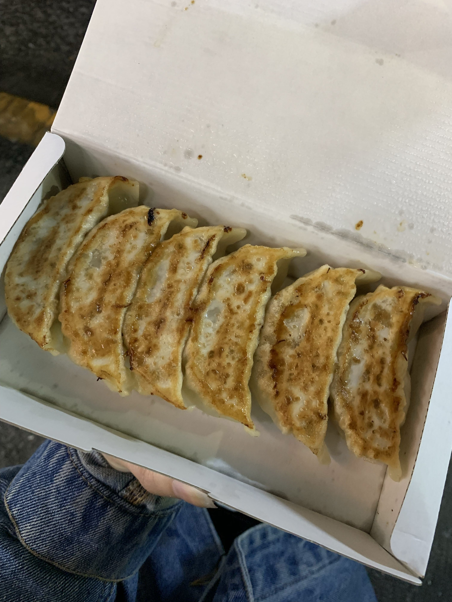
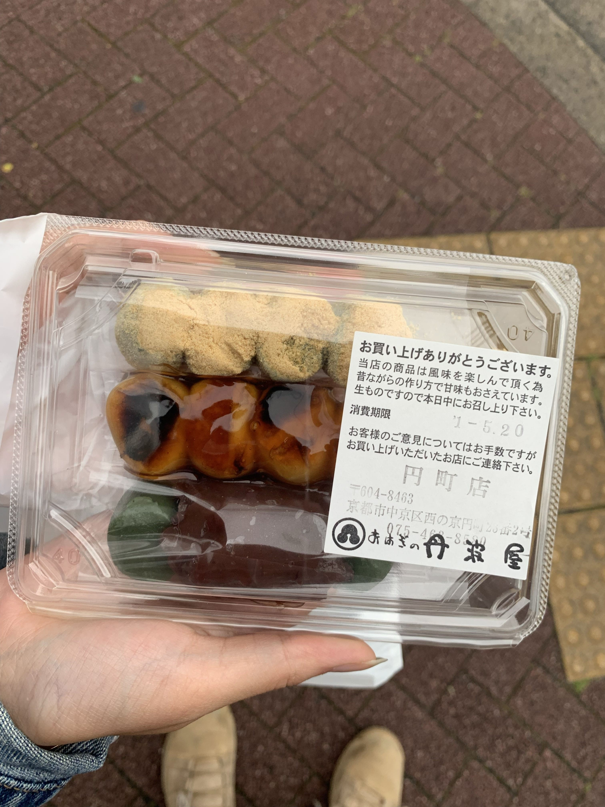
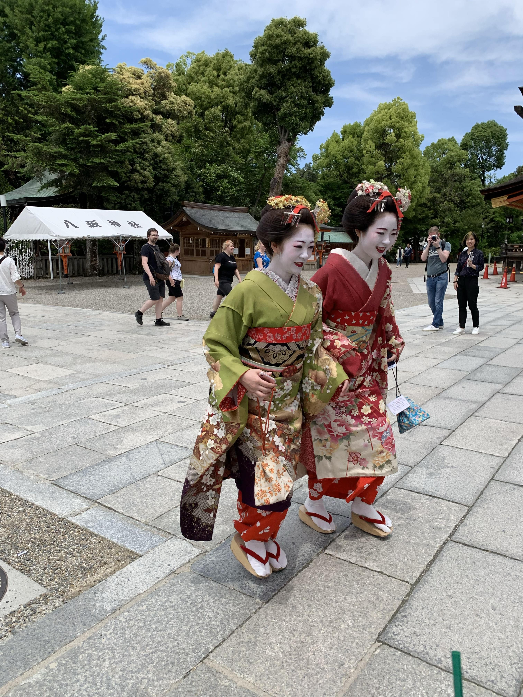
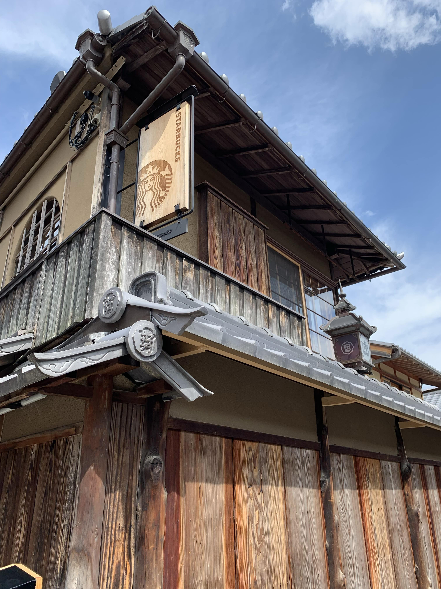
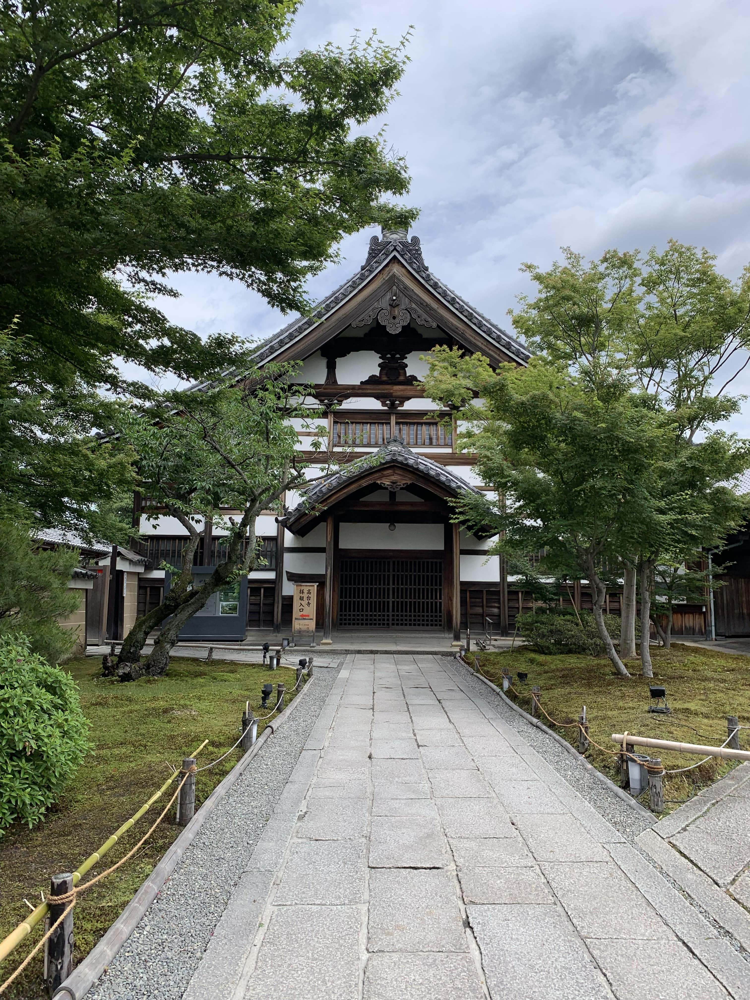
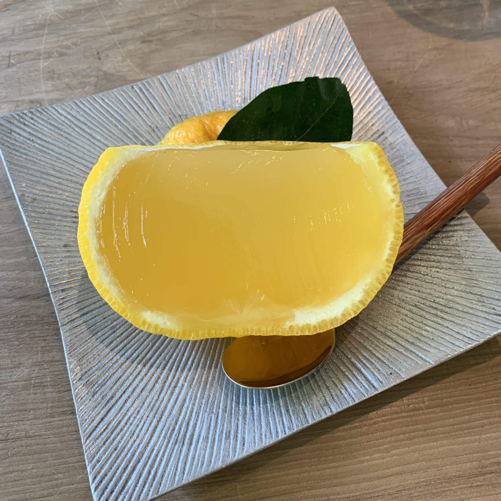
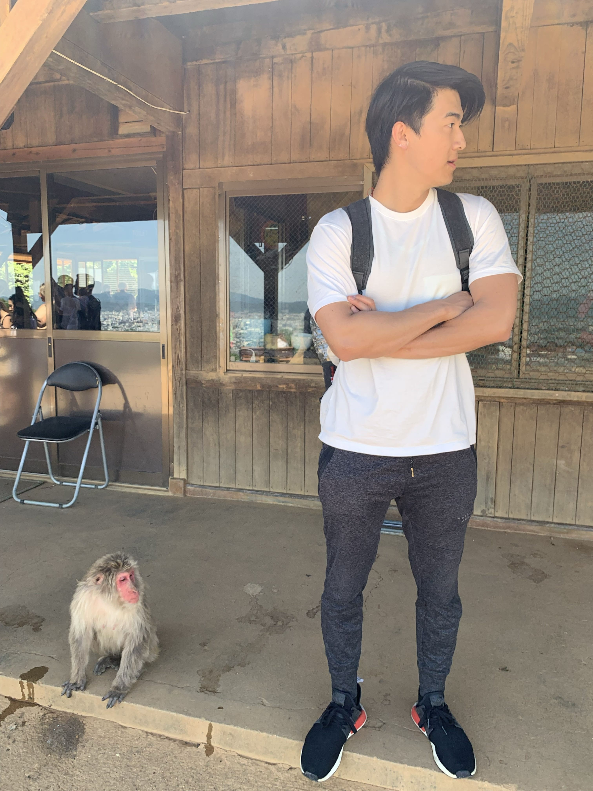

We took the Shinkansen from Tokyo to Kyoto, which is a super fast bullet train with rails connecting through a majority of Japan. Before we left, we picked up some Tokyo Bananas, which is a popular brand of souvenir snacks sold at most malls, large tourist sites, and big stations!
Caramel Tokyo Bananas!We also picked up two shinkansen bento boxes, which are basically freshly cooked meals packaged and sold at shinkansen stations to eat during your ride! We tried a teriyaki chicken one as well as a beef flavor. Overall, they are pretty tasty but definitely on the pricier side for something that is prepacked (~$21).
Chicken Teriyaki Shinkansen Bento BoxThe train we took from Tokyo took us about 3.5 hours to get to Kyoto. It also just so happened that it only rained during the days we were traveling (which was lucky for us!). The views we saw on the train also made me nostalgic about school life anime lol.
Views from the Shinkansen during the rainWhen we arrived, we first headed to our hotel to drop off our luggage. The streets of Kyoto also gave off a much different vibe than Tokyo. Even though it was a city, it was a lot more laid back and there were many small back streets lined with houses rather than shops and skyscrapers. We stayed at Japaning Hotel!
 Is this literally a street in an anime or nah LOL?
Is this literally a street in an anime or nah LOL?
We were a bit tired from traveling and it was already mid-afternoon
Our day one was pretty simple:
✧ Kinkakuji ✧ Nishiki Market
Kinkakuji in Kyoto, JapanWe headed to Kinkakuji, a golden temple surrounded by a beautiful garden, and took some great pictures! It was still drizzling a little so it definitely made the atmosphere of the temple a bit moodier.
Many of the temples have areas where you can toss a coin into a pot or a small pond, but Kinkakuji had many more cultural areas that I wish I could explain if I knew a bit more about Japanese religion (although I did take an Asian Studies class in college)!
One of the street vendors nearby!After a walk soaking in the beautiful scenery, we walked along the street of souvenir shops in the area.
We ate dinner at a small shop inside Nishiki Market but not gonna lie, one of my favorite foods from Kyoto was this one restaurant that served bomb gyoza!
 The best gyoza! I got this four times lolI wish I remembered the name of the actual restaurant but it was just a few blocks from our hotel and was across the street from a DAISO and next door to a 7-11. Sorry for the super vague description!
 Three flavors of dangoJust walking around Kyoto felt like such a dream, especially with the fact that there would be pachinko shops right across the street from peoples’ homes. Honestly, we were pretty tired already so we headed back pretty early that night to make sure we were ready for our packed schedule the next day!
Beautiful greenery in KyotoThe second day:
✧ Tsujiri Gion Green Tea Dessert ✧ Inari Shrine ✧ Shinkyogoku ✧ Kiyomizudera ✧ Higashiyama ✧ Wajouryoumen Sugari Ramen ✧ Doi Katsuman (Fushimi-Inari Station) ✧ Chukasoba Umiya
Different areas of prayer by the templeOne of my favorite spots we hit up was Inari Shrine! The red torii gates were so pretty and they literally continued up the mountain it was on. Most people didn’t make it past the first half but since we were already dedicated, we decided to go up before quitting 80% of the way up LOL.
Walking through the beautiful torii gates of Inari ShrineAnd don’t call us quitters yet! The entire hike up the mountain for Inari Shrine was about 3 hours if you were walking, it’s all steep stairways and uphill paths so walking up on a 95 degree summer day wasn’t exactly the easiest thing we did in Kyoto, especially since we weren’t prepared for it to be that long and didn’t bring as much water.
So many cats here!But overall, we got to see many of the sights we wanted to at Inari Shrine, there are many shrines, fox statues, and stray cats! The locals who live on the mountain feed the cats and they really brighten your way up!
After you exit, there is a really big street lined with shops and souvenir stands, as well as food carts selling small snacks! Note: there were many students there on field trip since this is a cultural site so keep in mind there’s probably going to be big crowds if you don’t go early!
Sakura mochi and dango!We had some crab sticks and takoyaki! Takoyaki is basically a fried ball filled with delicious wheat flour-based batter, some veggies, and a small piece of octopus. We tried takoyaki in every city we visited in Japan and I think my favorite one was in Osaka (which we’ll cover in the next article hehe)!
Hot and steamy takoyaki c:Many of the Japanese locals and students are wearing kimonos and traditional attire so it’s a really good chance to soak in the culture!
 Women dressed as geishas in KyotoThere was also a Japanese style Starbucks which was so cool to see! It was a traditional Japanese style house with different rooms and bamboo mats with small sitting tables. The private rooms are free to use for customers but you just need to leave your shoes outside the room!
 Japanese-style StarbucksWe then visited other temples in the area we were in but since many of them were Buddhist temples, we did not take many photos indoors out of respect. Many of them revolved around the life and death of Buddha and some temples also sell candles and incense sticks for you to pray.
Of course, we had lots of dessert as many cities in Japan have amazing dessert options!
Matcha Bingsoo with mochi balls Sakura and Matcha flavored ice creamOur final day in Kyoto:
✧ Arashiyama Monkey Park Iwatayama ✧ Bamboo forest ✧ Oimatsu Arashiyama ✧ Otsuka ✧ Nijo Castle ✧ Patisserie Gion Sakai Dessert ✧ Jean-Paul Hevin Dessert
When I tell you Kyoto is one of the most aesthetic places in the world, I am not kidding lmao. I literally took pictures of everywhere I went, in Kyoto alone, I took about 2,000 photos in three days lol. I’m glad I upgraded my phone!
We visited a beautiful garden near the Bamboo forest and we were sure to wake up super early to get there and take photos before the crowds came. We arrived around 7:30 am and there were already about 10-15 people taking photos.
The infamous bamboo forest!Now, in pictures, you may think this is a very big area but the Bamboo forest is spread out pretty widely in the area and there is only about one stretch of the road that has tall bamboo growing on both sides. The entire strip is about 100-200 feet long so it gets so packed with so many people trying to take photos at once lol.
So if you want photos without people, definitely try to get there around 7 am. The trick is to angle the camera in a way where the people are behind your body so they’re covered!
 A jello-like citrus dessert!We got dessert at this small shop nearby but OMG,the best mochi I’ve ever had in my life, and probably the best dessert I’ve had in my life too.
THE BEST MOCHI EVERBut IT WAS THE BEST MOCHI EVER, 100/10 WOULD RECOMMEND. This was my favorite thing I ate in Kyoto, hands down!!
Next, we visited Otsuka, which is a very well-known wagyu beef restaurant that’s close to Bamboo forest. Note: When you arrive at bamboo forest, go and sign your name on the list first before you go do your tourist-y things!
Our first time trying sake in JapanThis place doesn’t take reservations so every morning, they put out a physical piece of paper outside their restaurant where you sign up with your name and party size. They will call you based on availability after they open but we arrived 30 minutes before they opened and were about 25th in line and got in about an hour and a half later.
This place is very small and it is extremely popular so don’t waste your time waiting in line like us! Sign the form then go have fun for 30-40 minutes and come back!
Otsuka's menuWhen we went in, the vibe was of a small family-owned shop and since we were already here, we figured we’d try the Murasawa Sirloin Steak, which is their most expensive menu item (about 6,200 yen so around $65).
Murasawa Sirloin Steak - Wagyu A5I normally don’t like steak, but Bowen does so I got a beef bowl with tofu for myself. I tried the Murasawa steak and it literally melts in your mouth, I’m surprised it was still considered beef lol. The meat is from a farmer who raises 80 cows a year for Murasawa beef, the cows sleep on tatami sheets to reduce stress and are treated like royalty.
Although this is nowhere near what I would spend at a restaurant on a daily basis, I think experiences during travel are far more important than going downtown to The Capital Grill. So if you have the chance to splurge (and I am normally very frugal), I would say do it!
 Super friendly monkeys!Our next stop was Arashiyama Monkey Park Iwatayama. I think Kyoto just has many mountains because a lot of their tourist sites are on mountain tops or trails! Anyway, it’s a great way to get your steps in (I walked an average of 12,000-18,000 steps per day in Asia lol).
To see these lovely animals, you will hike up the mountain trails for about 40 minutes (if you aren’t there in the middle of the summer like we were, you’ll probably get up there a lot faster and less sweaty lol).
You can feed them from inside the hut!When you get to the top, you’ll see beautiful views of Kyoto while feeding monkeys and relaxing in their little mountain rest stop! The monkeys are really friendly and you’ll see babies, mommies, older monkeys who aren’t afraid to run up to you if you have food!
Views from the top of the mountain!After the quicker hike down, we got some street food snacks in the area nearby, many of the shops have dango and mochi, which are two of my favorite Japanese desserts!
That night, we ate at a Izakaya, where we tried various different skewers, sushi pieces, and appetizers! An izakaya is basically a bar/restaurant that is open late where you can eat and drink. These places are usually louder, the crowd is older, and many of them allow smoking so if you’re sensitive to this, be sure to call in and ask about that first!
And, finally, here’s some more dessert we had at a local dessert shop, didn’t have much to say about it besides the fact that there are so many great sweets options in Kyoto!
 Pistachio Mousse Dessert from Patisserie Gion Sakai Dessert
Raspberry Cheesecake from Patisserie Gion Sakai Dessert
Pistachio Mousse Dessert from Patisserie Gion Sakai Dessert
Raspberry Cheesecake from Patisserie Gion Sakai Dessert
The next day, we were off to Osaka! Stay tuned for the last stop of our Japan adventures :)
Goodbye Kyoto!